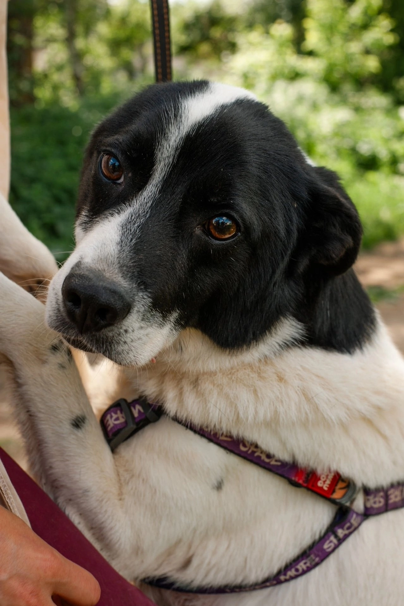
Гаврош
Безобидный, ласковый, трепетный. Очень ручной — он ни на шаг не отойдёт от вас. Хватается лапками за человека и держится. Такой милый и наивный пёсик, что очень жалеем его.
Узнать о Гавроше
Безобидный, ласковый, трепетный. Очень ручной — он ни на шаг не отойдёт от вас. Хватается лапками за человека и держится. Такой милый и наивный пёсик, что очень жалеем его.
Узнать о Гавроше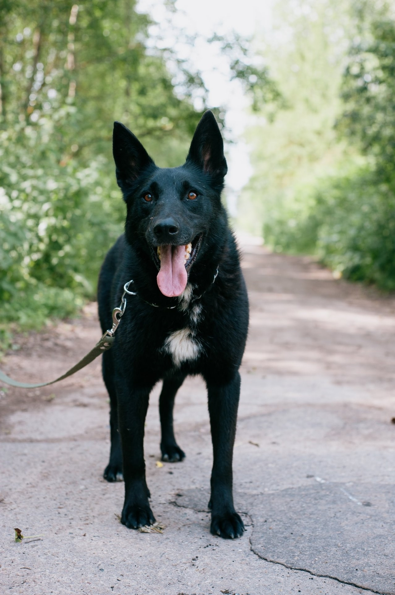
Да, она чёрненькая, но поверьте: такую не спутаешь ни с кем. Искрящиеся глазки, длинные ушки и фирменный хвост-вертолёт, который не устаёт размахивать от счастья.
Узнать о Гере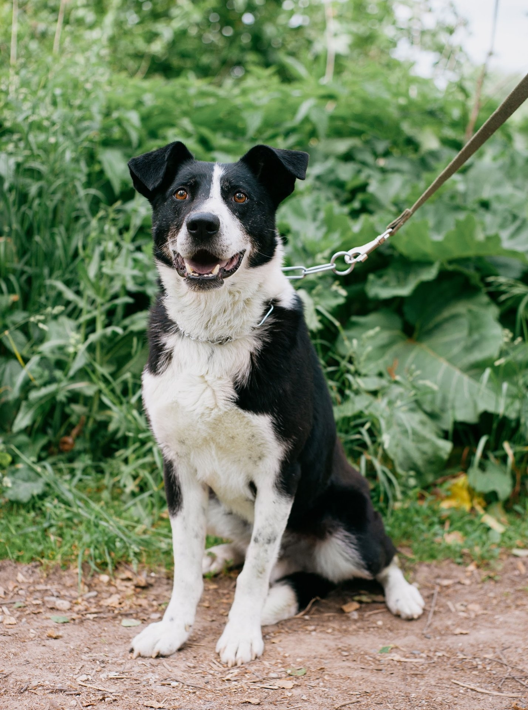
Несмотря на внушительную внешность, в нём таится нежность щенка. Он уравновешен, умён и очень послушен. Приучен ходить на поводке: не тянет, спокойно ждёт начала прогулки и идеально ведёт себя дома. Славик кастрирован.
Узнать о Славике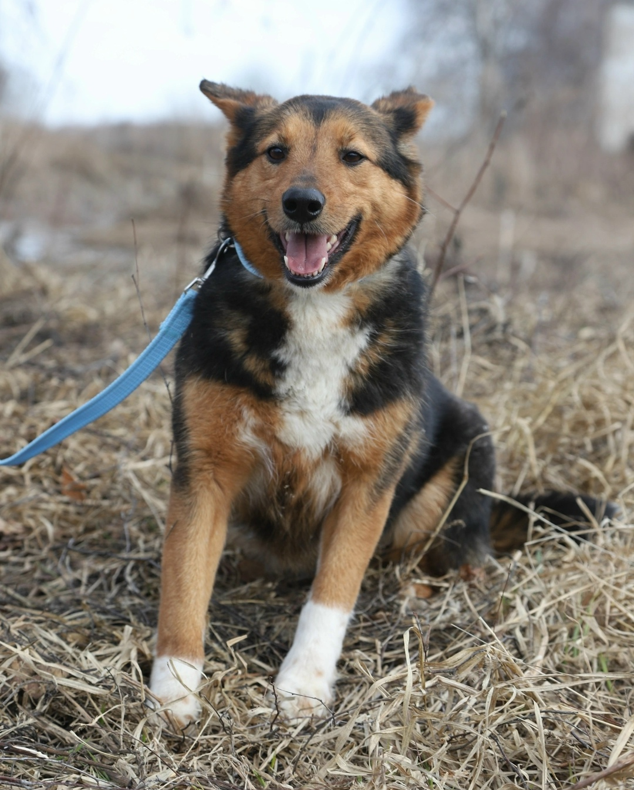
Невероятно преданная, отлично ходит на поводке, очень смышлёная, сообразительная, в меру активная. Такой хрупкой собаке, как Тельма, совсем не место в приюте.
Узнать о Тельме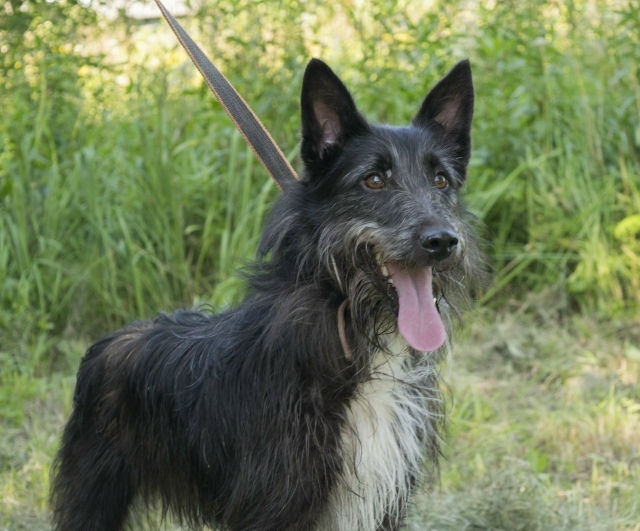
Вечная девочка-подросток, энергии которой хватит на десяток собак! Она готова бегать и играть с волонтёрами до потери пульса. С появлением у вас Мухи вы ощутите эту детскую радость, непосредственность и искреннюю открытость в полной мере.
Узнать о Мухе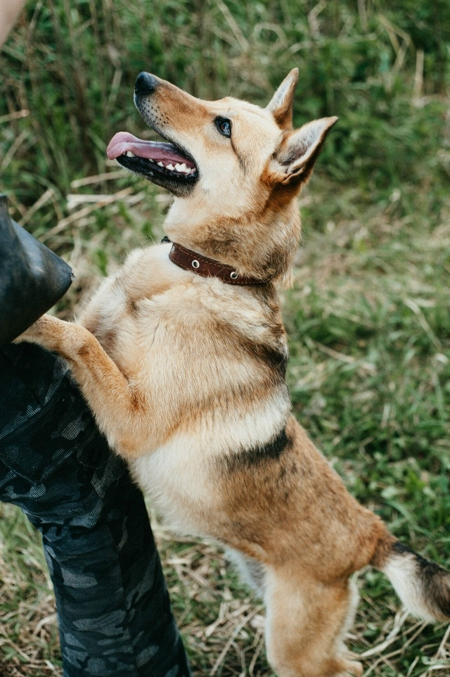
Как же любит общаться, на ручки прыгать, обниматься — это всё про неё! Задор и оптимизм у этой собаки неиссякаемый. Абсолютно социализированная, управляемая, воспитанная, коммуникабельная. Проживать с такой собакой — просто мечта!
Узнать о Соечке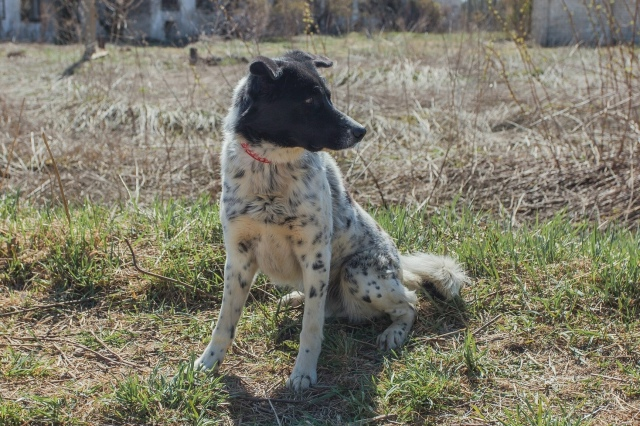
Хорош собой, активен и умён. Среднего размера, вполне адекватный, идеально подойдёт для проживания в частном доме, в вольере. После скитаний и бед уличной жизни Арсик заслуживает самых добрых рук и преданных людей.
Узнать об Арсе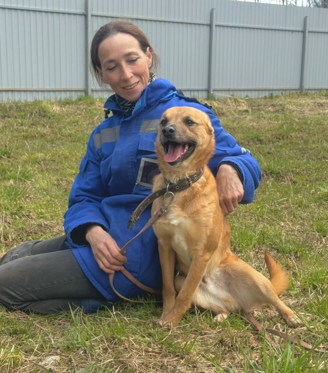
Этот рыжий мальчишка бесконечно улыбается. А мы глядим на него и не можем нарадоваться, что все его беды позади. Сейчас это очень весёлый товарищ, который бесконечно любит людей. На прогулке он стремится всех заобнимать.
Узнать о Шансе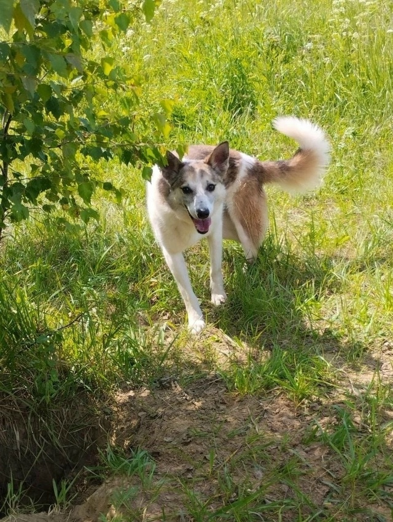
Маленькая, трёхлапая собака с большим заветным желанием, которое может исполнить только волшебник, — получить себе немного смелости. Со знакомыми волонтёрами Людушка добрая, пугливая, но смышлёная девочка. Просто и быстро заполучить её в подружки не выйдет, но сколько вы потом получите радости от того, что сделаете одного робкого хвостика счастливым.
Узнать о Людочке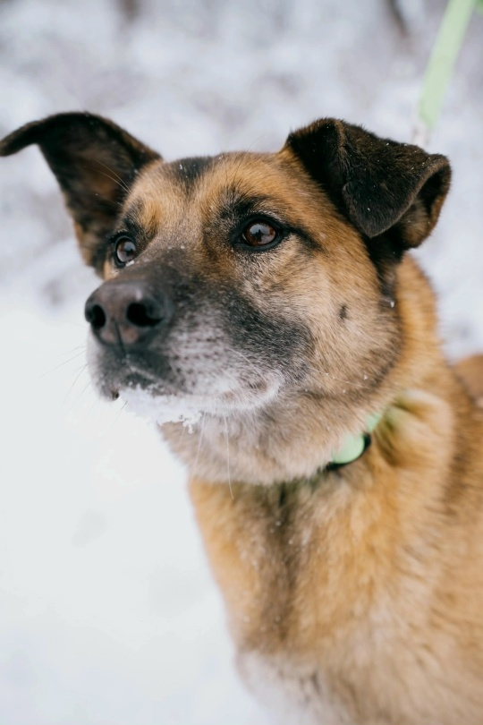
Ласковая, добрая и просто невероятная Тэффи мечтает об уютном доме. Она сама нежность, может часами обниматься с человеком. Спокойная, не суетливая, не лает по пустякам. Тэффи обожает всех: мужчин, женщин, детей, других животных.
Узнать о Тэффи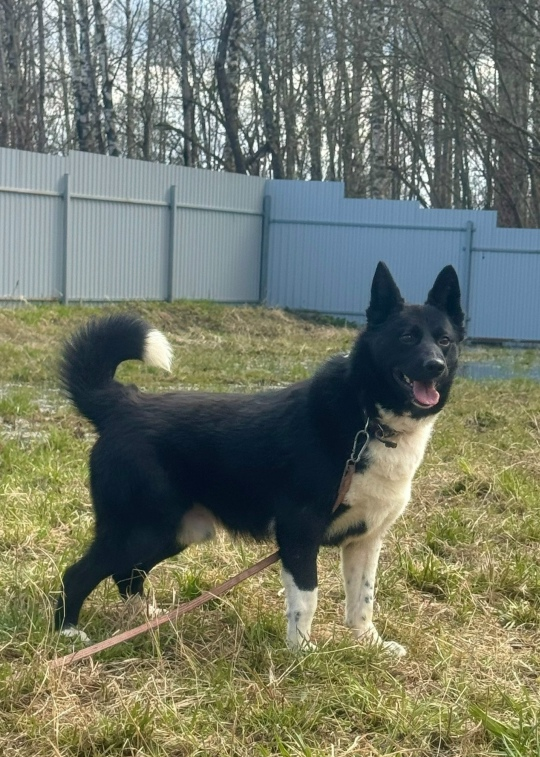
Вы давно мечтали о собаке, но не знали, о какой именно? Тогда советуем присмотреться к Талеру. Молодой, активный, позитивный и очень дружелюбный. Парень чистокровный дворянин, но очень похож на маленькую лаечку.
Узнать о Талере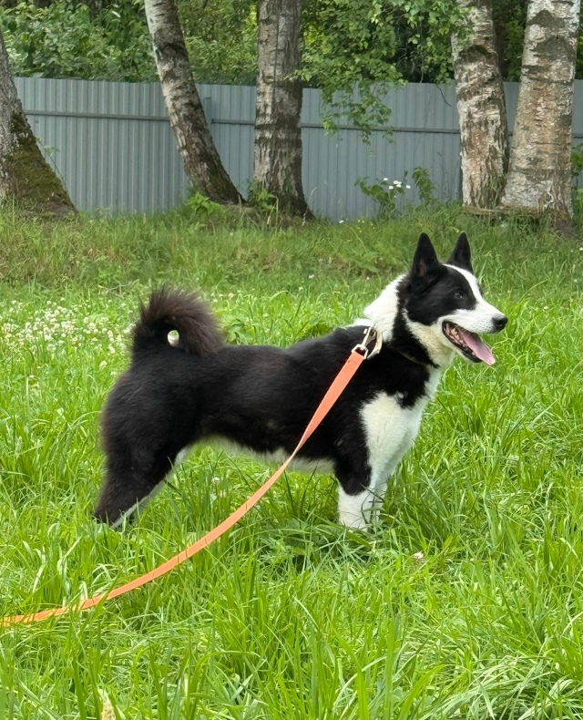
Увидев Азалию, вы сразу будете ею очарованы. Она сама нежность, к рукам человека так и льнёт. Ей всё время хочется быть в центре внимания, чтобы её гладили и хвалили. Она энерджайзер, юркая, ловкая.
Узнать об Азалии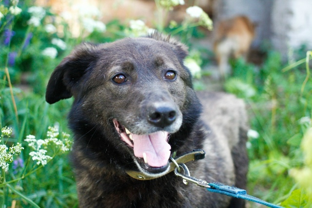
Сандра у нас не самая уверенная в себе собака, но зато очень нежная и трогательная. Такая она вся беззащитная и безобидная. А из-за красивой шёрстки похожа на медвежонка.
Узнать о Сандре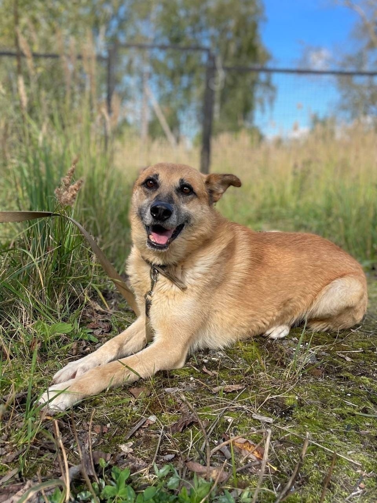
Долго думали, какого же цвета у нас Тимошка. Вроде не рыжего, но и не бежевого. Потом поняли — а он ведь жёлтенький, как солнышко. Он и правда такой — тёплый, добрый и очень милый. Бодр, полон сил, привлекателен и лицом, и фигурой.
Узнать о Тимошке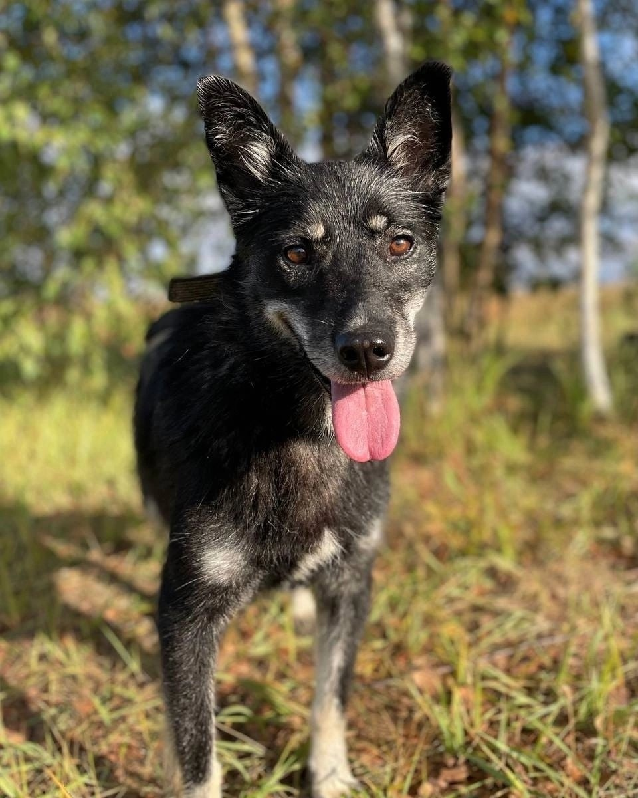
Девочка одна из тех, кто умеет на прогулках грозно и страшно лаять на незнакомцев — будет превосходной охранницей! Очень ласковая, не капризная, послушная, любит побегать и поиграть. К другим собакам относится адекватно.
Узнать о Румбе